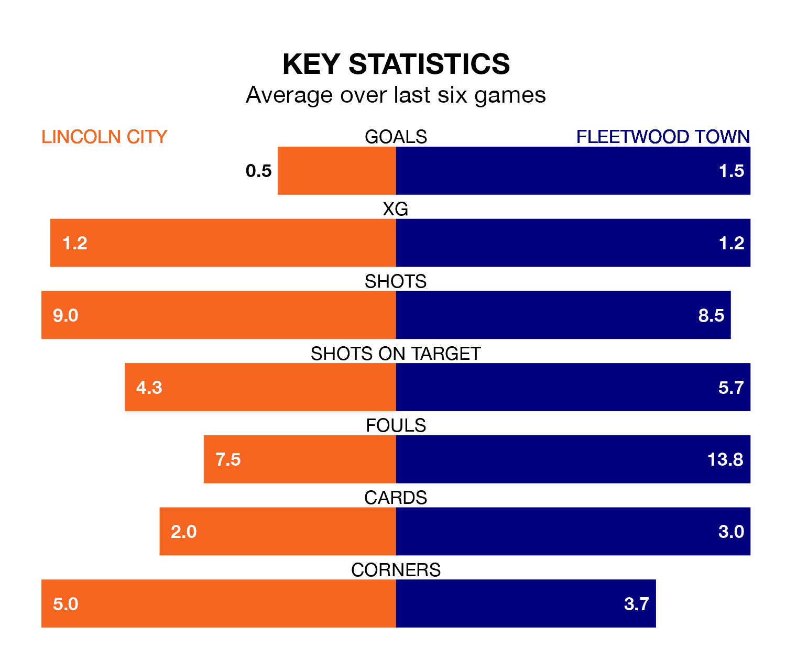

Struggling Fleetwood Town face Lincoln City away at the LNER Stadium on Saturday looking to build on a win in their last league outing.
After securing all three points with a 2-0 victory over Bristol Rovers on Tuesday, the Cod Army sit 22nd in EFL League One.
They travel to play a Lincoln side 13th in the standings, who also won their last match, 1-0 against Burton Albion, on February 3.
In the last 10 years, Lincoln and Fleetwood have played each other on eight occasions. Lincoln won three of them, Fleetwood two, and they drew three times.
On average, the Imps scored 1.2 goals and the Cod Army 1.0 in those matches.
Their last meeting was on October 21, when Lincoln won 1-0 away.
With Lukas Jensen between the sticks, Lincoln can rely on one of the league's safest pair of hands. He has kept 11 clean sheets in his 30 appearances this season, and only two other 'keepers – Portsmouth's Will Norris and Bolton Wanderers' Nathan Baxter – have been able to prevent the opposition scoring on more occasions in EFL League One.
In Fleetwood's net, Jay Lynch has five clean sheets in 29 games. He has conceded a goal every 58 minutes, 70% more often than the 100 minutes between goals for Jensen.
City are in disappointing form in EFL League One, with one win and three draws from their last six games.
With two wins and a draw over that period, Town's form is slightly better – they have taken seven points from 18, compared to the Imps' six.
With 30 goals in 30 games so far this season, the Cod Army are scoring at below the league average rate with 1.0 goals per game. And they are conceding more than average, letting in 50 goals at a rate of 1.7 per game.
The home side are also below average scorers, with 1.0 goal per game, compared to a league average of 1.3. They have also conceded 1.0 goal per game.
Updated: 11:43 (UTC), 08/02/24